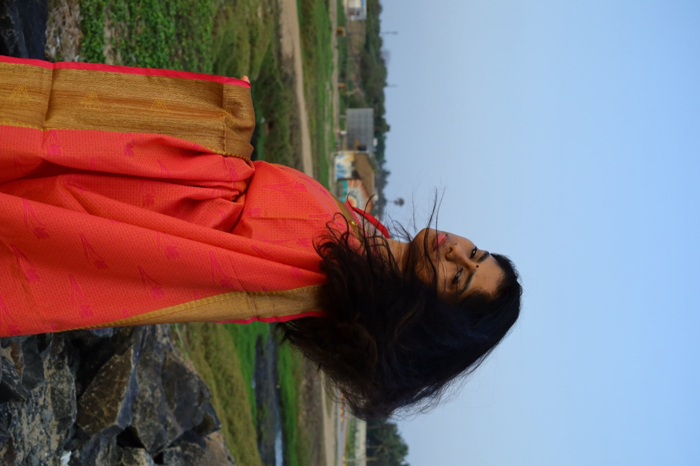
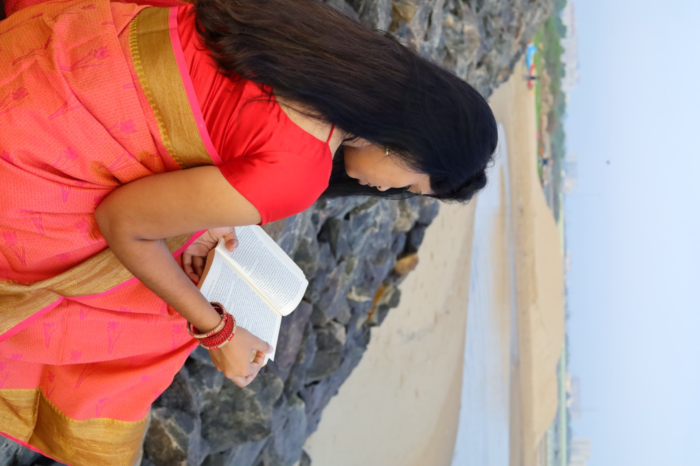
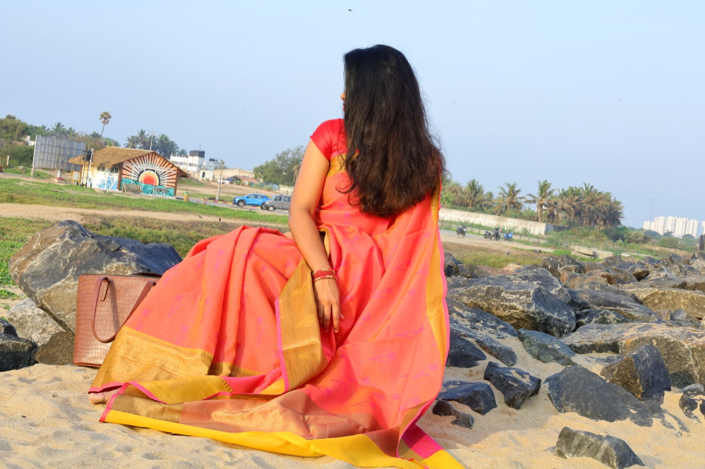
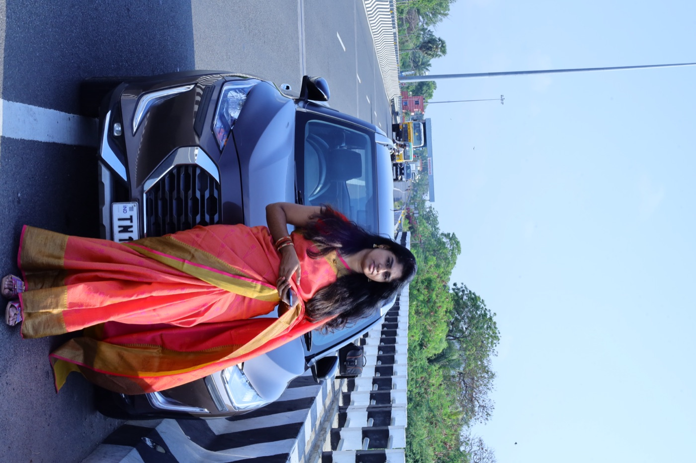
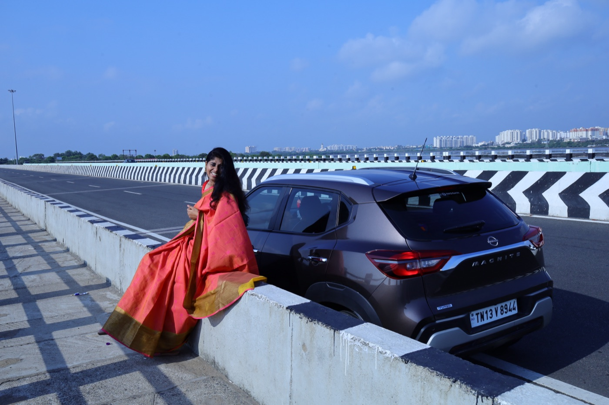
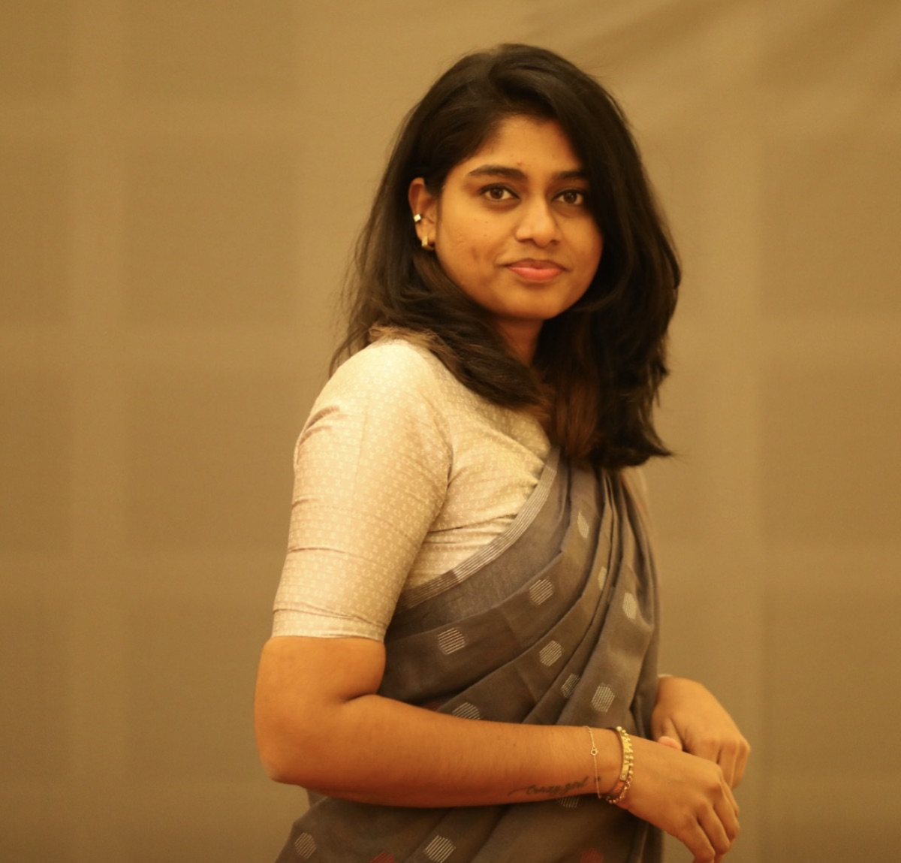
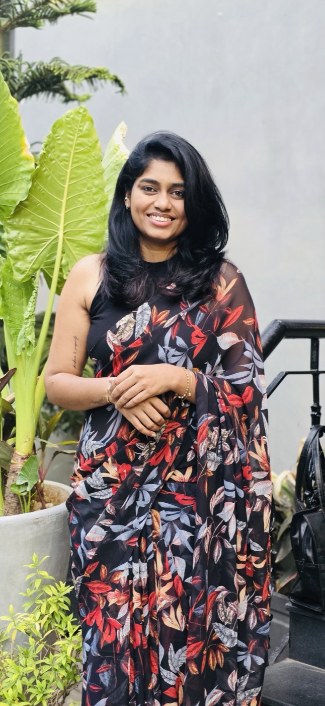
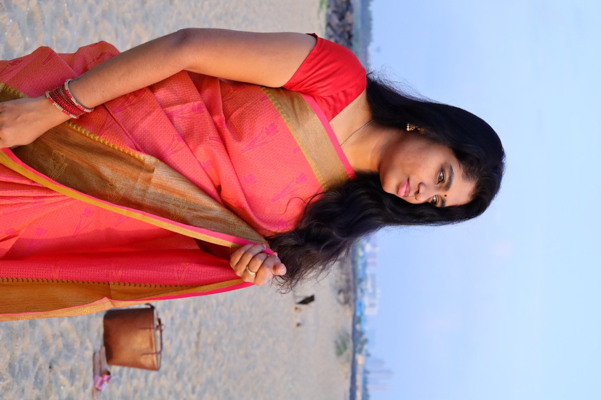

Universe · Six Yards
Six
Yards.
"I love the personality a saree brings out when I wear it."
Scroll to unfold →
Yard 1 · By the sea
Coral silk,
sea wind.
A silk saree, a book and the rocks at the edge of the sea in Chennai. Some of my favourite photos of me.



Yes, I drive in a saree too.Yard 2 · At the wheel


Yard 3 · Anywhere
Berlin.
Singapore.
Some people pack jeans for a trip. I pack a saree or two.


Yard 4 · Every day
Meetings,
stages, sessions.
A handloom cotton for a working day, a sheer print for a stage. The saree is how I show up.



"Six yards. Many lives."Yard 5 · The pallu
That's
six yards.
Every saree here is a real photo. Send me yours, or tell me which one you'd like to see next.